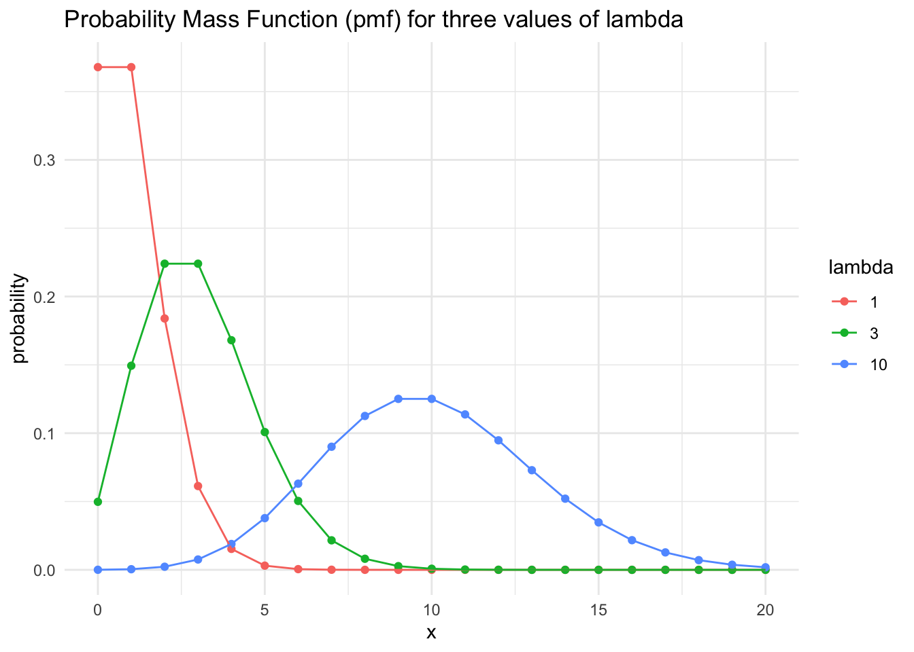
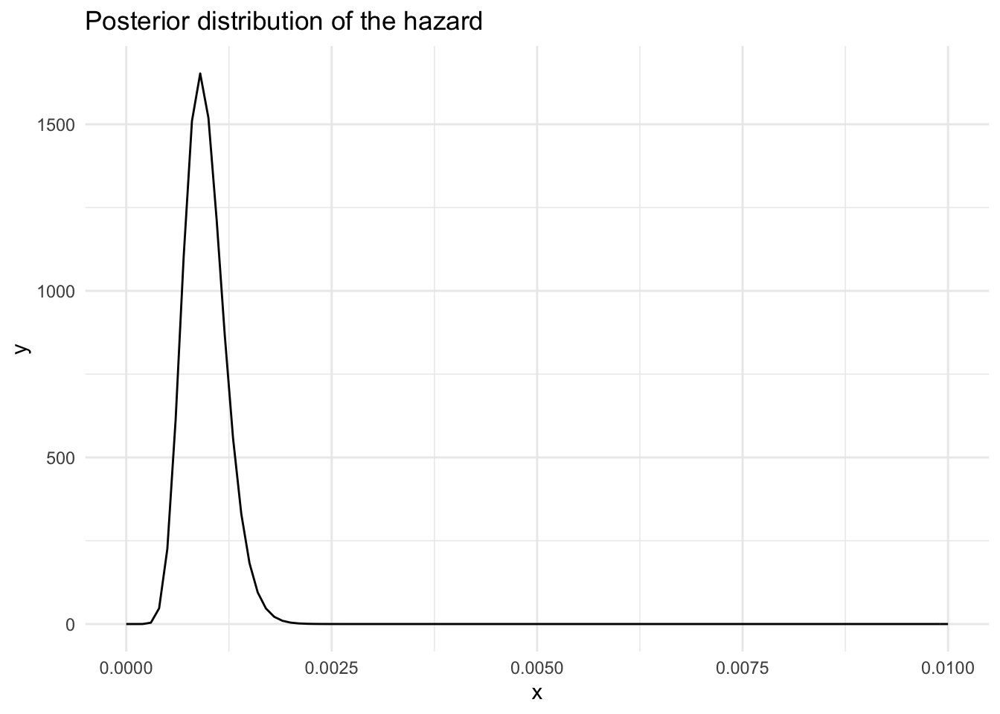
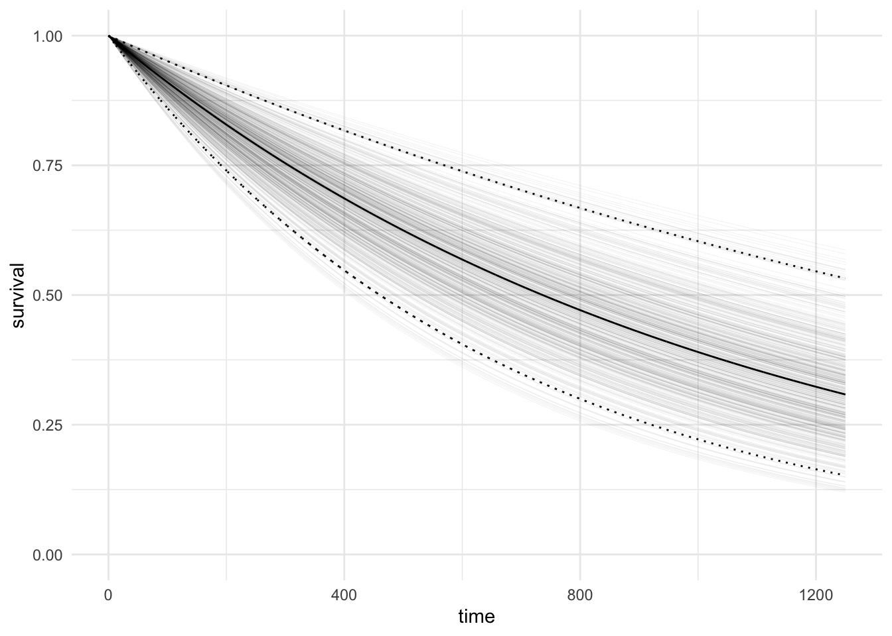

Poisson Distribution
Consider an arbitrary interval where the expected number of events in the interval is denoted as \(\lambda\). The number of events in this interval is Poisson distributed with rate \(\lambda\). To see this, proceed to subdivide the interval into \(n\) smaller intervals \(t_1, \dots, t_n\) in which the probability of an event occurring in each small interval is \(\lambda / n\) and can be represented as an independent Bernoulli trial. The number of events in the entire interval is distributed according to a Binomial distribution with number of trials \(n\) and probability of success \(\lambda / n\). If the intervals are infinitesimally small, in the limit as \(n \rightarrow \infty\), then number of trials increases and the Binomial distribution tends to the Poisson distribution:
\[\begin{align*} f(k) &= \lim_{n\rightarrow\infty} {n \choose k}\left(\frac{\lambda}{n}\right)^k\left(1-\left(\frac{\lambda}{n}\right)\right)^{n-k}, \\ &= \lim_{n\rightarrow\infty} \frac{n!}{(n-k)!k!}\left(\frac{\lambda}{n}\right)^k\left(1-\left(\frac{\lambda}{n}\right)\right)^{n}\left(1-\left(\frac{\lambda}{n}\right)\right)^{-k}, \\ &= \lim_{n\rightarrow\infty}\frac{n(n-1)\dots(n-k+1)(n-k)!}{(n-k)!n^k}\frac{\lambda^ke^{-\lambda}}{k!} \cdot 1, \\ &= 1 \cdot \frac{\lambda^ke^{-\lambda}}{k!}. \end{align*}\]
This is the probability mass function of the Poisson distribution and corresponds to the probability of observing exactly \(k\) events in an interval with expected number of events \(\lambda\). The Poisson probability mass function can be plotted for various values of \(\lambda\):
Exponential Survival Model
The inter-arrival times of a Poisson process are distributed according to an exponential distribution with density \(f(t) = \lambda e^{-\lambda t}\). The CDF of the exponential distribution is \(F(t) = \int_0^\infty f(s) ds = 1 - e^{-\lambda t}.\) The cumulative distribution function (CDF) is defined as \(\textrm{Pr}(T \leq t) = F(t)\), where \(T\) is a random variable representing the failure time and \(t\) is time period, hence the CDF defines the probability of the event occurring before time \(t\). The survival function is the complement of the CDF and is defined as \(S(t) = 1 - \textrm{Pr}(T \leq t) = \textrm{Pr}(T > t)\), the probability of the event happening after the elapsed time \(t\) given that the event hasn’t happened before \(t\). The survival function for the exponential distribution is \(S(t) = \exp(-\lambda t)\) and the hazard function is \(h(t) = \lambda\). The hazard is defined as the probability of an event happening in a small interval \((t_0, t_0 + \delta t]\) given that the event has not yet happened:
$$\[\begin{align*} h(t) &= \lim_{\delta t \rightarrow 0} \frac{\textrm{Pr}(t < T \leq t + \delta t|T > t)}{\delta t}, \\ &= \lim_{\delta t \rightarrow 0}\frac{\textrm{Pr}(t < T \leq t + \delta t)}{\delta t S(t)}, \\ &= \frac{f(t)}{S(t)}, \\ &= -\frac{\textrm{d}}{\textrm{d}t}\ln(S(t)), \\ &= -\frac{\textrm{d}}{\textrm{d}t}(-\lambda t), \\ &= \lambda. \end{align*}\]$$
Observations consist of the triple \(\{y, x, \nu\}\) where \(y \in \mathbb{R}^n\) is a vector of followup times, \(x \in \mathbb{R}^{n\times p}\) is a matrix of covariates where the \(i^{th}\) row is associated with the \(i^{th}\) entry of the followup time vector \(y\), finally \(\nu\) is a \(n\) dimensional vector where each entry is 1 if the event is a death and 0 if the event is censored at the followup time.
To determine the rate parameter of the exponential survival, \(\lambda\) and learn about the survival function then we first need to specify the likelihood. The likelihood for a parametric survival model can be written as:
\[p(y|x, \theta) = \prod_{i=1}^n f(y_i|x, \theta)^{\nu_i}S(y_i|x, \theta)^{1-\nu_i}.\]
This means for a censored individual, when \(\nu = 0\), then only the survival function has a contribution to the likelihood since the event happens sometime after the followup time \(y\). For the exponential model the likelihood can be written as:
\[p(y|x, \theta) = \prod_{i=1}^n (\lambda e^{-\lambda y_i})^{\nu_i}(e^{-\lambda y_i})^{1-\nu_i}\]
For the following derivation assume that the model has no covariates and hence \(\lambda\) is a parameter of interest. If the prior for the hazard is \(\lambda \sim \textrm{Gamma}(\alpha, \beta)\) then the posterior for lambda is:
\[\begin{align} p(\lambda|y, x) &= \frac{\beta^\alpha}{\Gamma(\alpha)}\lambda^{\alpha-1}e^{-\beta \lambda}\prod_{i=1}^n (\lambda e^{-\lambda y_i})^{\nu_i}(e^{-\lambda y_i})^{1-\nu_i}, \\ &\propto \lambda^{(\alpha-1+\sum_{i=1}^n\nu_i)}e^{-\lambda(\beta + \sum_{i=1}^ny_i)}. \end{align}\]
This can be recognised as a Gamma distribution with shape \(\alpha-\sum_{i=1}^n\nu_i\) and scale \(\beta + \sum_{i=1}^ny_i\).
To test this method, we will use the ovarian cancer data from the survival package. The ovarian cancer data contains the followup time, futime and censoring, fustat.
# A tibble: 26 × 2
futime fustat
<dbl> <dbl>
1 59 1
2 115 1
3 156 1
4 421 0
5 431 1
6 448 0
7 464 1
8 475 1
9 477 0
10 563 1
# … with 16 more rowsThe posterior distribution of the hazard for the ovarian cancer data is plotted below, where the parameters of the Gamma prior distribution are \(\alpha = 3\), \(\beta = 2\).

The posterior predictive distribution can be calculated as:
\[f(t|y) = \int f(t|\theta)p(\theta|y) d\theta\]
And the predictive survival:
\[S(t|y) = \int S(t|\theta)p(\theta|y) d\theta\] Now the survival curve can be plotted by simulating the rate, \(\lambda\) from the posterior distribution and calculating the survival \(e^{-\lambda t}\) for discrete values of \(t\).

Fitting the exponential model using BRMS
In general, parametric survival models can be fitted using sampling based methods such as MCMC. The package brms can be used as a straightforward interface to stan.
To express this model using brms, we model the followup time directly while considering censoring. The event is considered right-censored if a death has not occurred, where fustat = 1 and the formula to specify the followup time is right censored is futime | cens(fustat). This is followed by distributed by ~ and the covariates of interest. To compare it to the analytic result above we consider the model with only an intercept and no covariates. Note that this model is not exactly the same since the prior is on specified on the log of the rate, \(\lambda\).
fit_exponential <-
brm(
futime | cens(fustat) ~ 1,
data = ovarian,
family = brmsfamily("exponential"),
cores = 4,
prior = prior("normal(0.0, 3.0)", "Intercept")
)summary(fit_exponential) Family: exponential
Links: mu = log
Formula: futime | cens(fustat) ~ 1
Data: ovarian (Number of observations: 26)
Draws: 4 chains, each with iter = 2000; warmup = 1000; thin = 1;
total post-warmup draws = 4000
Population-Level Effects:
Estimate Est.Error l-95% CI u-95% CI Rhat Bulk_ESS Tail_ESS
Intercept 7.00 0.26 6.51 7.55 1.00 1772 1778
Draws were sampled using sampling(NUTS). For each parameter, Bulk_ESS
and Tail_ESS are effective sample size measures, and Rhat is the potential
scale reduction factor on split chains (at convergence, Rhat = 1).The figure on the left below compares the analytic survival function for the exponential model on the left, to the sampling based survival function using 100 draws from the posterior distribution. In addition, the thick black line on the right-hand plot represents the median survival calculated from 4,000 draws from the posterior distribution

Citation
BibTeX citation:
@online{law2019,
author = {Law, Jonny},
title = {Bayesian {Survival} {Analysis:} {Exponential} {Model}},
date = {2019-08-09},
langid = {en}
}
For attribution, please cite this work as:
Law, Jonny. 2019. “Bayesian Survival Analysis: Exponential
Model.” August 9, 2019.